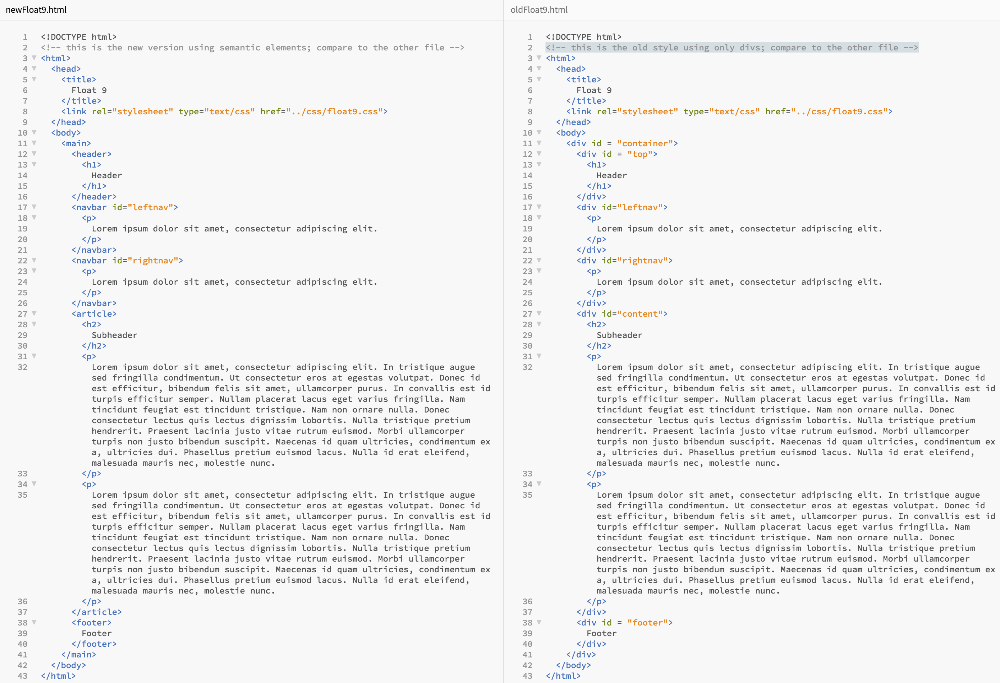

Due Date: Wednesday, 5/10/23
explanation video
In this assignment you will begin to use the "semantic" elements, as well as the div and span tags. These tags are used to group and structure a web document.
Until recently, many advanced web pages were mostly made up of <div> elements, and they were distinguished using classes or ids.
The "semantic" elements have been introduced to save time when styling, but also to help search engines learn more about your page's content and structure.
"Semantic" refers to the fact that the element names have more meaning (article, footer, etc.) rather than "div" which is neutral.
In order to see the difference this makes, look at the blocks of code below.
Readings
Please read:
Html 5 Semantic Tags:
- article
- details
- figcaption
- footer
- header
- main
- mark
- nav
- section
- summary
- time
- aside

Please examine this example of how this example code could have been written using semantic elements: 
- Note how explicit id's and classes no longer have to be used to describe different elements when writing stylesheets.
- Think of how these elements might help screen readers to present information to those who can't see.
Note: You will still find many, many older web sites that use:
<div class="article">
<div class="main">
<div class="section">
rather than the semantic elements.
span
The span element is used whenever you want to apply style (for example, text color) to a small phrase. Please read about it here.
Newspaper assignment
Create an example newspaper front page that highlights some major things that have happened in your life lately (for example, "Indigo De Souza drops her new album: All of This Will End"). You can also make some funny headlines up; this assignment is just testing your understanding of semantic elements (with creativity). Your assignment should include at least 2 articles (using <article>), 2 “ads” on the side of the articles (using <aside>), a big headline (using <header>), several bits of information about the paper (like dates/author/sources/etc. using <nav>). You don't need to make them links, but on a full web site, they would be. Also include some kind of information in the footer (using <footer>). Must use at least one image, whether it be for an “ad” or maybe the headline article.
- For this project, do your coding in the html and css files of the repl.it Project 6.
- Use at least 7 semantic tags properly (footer, header, nav, article, aside, section, etc).
- Show creativity with newspaper-style layout.
- Show creativity with the articles.
- At least 2 article elements,.
- At least one image with proper placement, alt and title tags)
- Newspaper's "masthead" is the top element, followed by some information about the newspaper below (using <nav>)
- At least 2 “ads” using the <aside> semantic element.
- Use the span element at least once.
- Do the layout using the box model and position elements with the tools you learned there (such as float:right, etc.).
- Use an external style sheet to style all elements on the page
Rubric
| Category | minus 15 points | minus 10 points | minus 5 points | Full points |
|---|---|---|---|---|
| Semantic tags | 4 different semantic tags used | 5 different semantic tags used | 6 different semantic tags used | At least 7 different semantic tags properly used (footer, header, nav, article, aside (and two others from the list of "Html5 Semantic Tags," above). |
| Other requirements | Four of those seven were done. | Five of those seven were done. | Six of those seven were done. | The seven bulleted items numbered 4-11 above were done. |
| Code Quality | Code doesn't run as expected and shows they did not study or understand the semantic elements | Code displays somewhat as expected, minimal understanding the semantic elements | Uses somewhat appropriate syntax and correct features. Well formatted, basic understanding of the semantic elements | Easy to understand. Uses appropriate syntax and features to accomplish the task. Shows they studied and understood the semantic elements very well |
| Creativity | Student does not show basic creative effort (i.e. no addition of content, text/headers/etc) | Student shows minimal creativity (i.e adds a couple things but not much) | Student shows some creativity (i.e creates some content, text/headings/etc and some nice styling) | Student shows creativity with both the overall newspaper layout and the individual articles (i.e. additional content, lots of styling, etc.) |